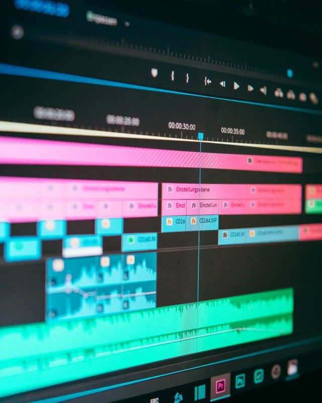
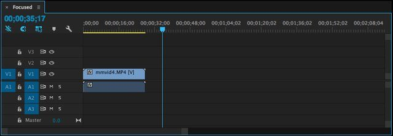
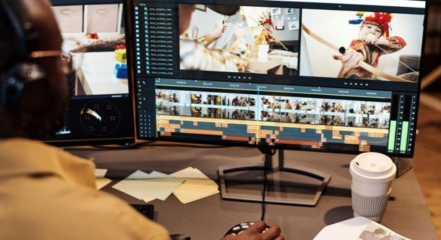

Short answer: A beginner video editing workflow follows the same steps every time — organise your footage, build a rough cut, tighten the edit, fix the sound, then colour, review, and export. Starting with effects before deciding what the video is about is why most first videos fail. This guide walks through each step in order.
Follow a simple beginner video editing workflow: organise footage, build a rough cut, tighten the edit, fix sound, then colour, review, and export.

A beginner's first video often fails for a simple reason: editing starts with effects, transitions, and music, before anyone has decided what the video is actually about. A clear workflow gives you the same steps every time, so you spend less time searching for clips. The workflow below works for YouTube videos, short social videos, and class projects, and it works in free tools such as DaVinci Resolve and CapCut as well as in paid tools such as Adobe Premiere Pro. You need a plan, organised files, and patience to review before you export.
Before you open your editor, create one project folder with subfolders for video, audio, images, and exports. Copy all your footage into that folder and keep a backup copy on another drive or cloud storage if you can. Clear clip names save time later. Then watch your footage once without editing. Mark the best takes, note any clips with poor sound or shaky framing, and write a short outline: opening, main points in order, and ending. This outline becomes your editing map. Skipping this step often leaves you struggling to find a story in random clips. Ten minutes of organising at the start can save an hour of confusion later.

Import your organised clips into your editor and place them on the timeline in outline order. This is your rough cut, and it should be deliberately plain: no effects, no colour changes, and no fancy transitions yet. Simply trim the start and end of each clip, remove long pauses, mistakes, and repeated lines, and check that the story flows from one point to the next. If a section feels slow, cut it shorter rather than hiding it with music or effects. A good test is to watch the rough cut with the sound off for structure, then with the sound on for pacing. If the story is unclear at this stage, fix the order and cuts now, because later polish will not fix a weak structure. A strong rough cut makes every later step easier.
Once the rough cut works, tighten it. Cut on action where possible, so a movement or a spoken point carries the viewer into the next shot instead of stopping dead. Add B-roll, which is extra footage that illustrates what is being said, such as close-ups, street scenes, or hands working, over parts where the main shot is dull or a cut would feel abrupt. B-roll also helps you hide edits and keep the video visually interesting without distracting effects. Keep transitions simple. A straight cut is the most professional choice for most edits, with a fade used for a change of time or place. Using a different transition for every clip distracts from the message. At this stage, also add titles and text, but keep the style consistent: one or two fonts, readable sizes, and text that does not cover the main subject.

Viewers forgive slightly plain visuals far more easily than they forgive bad sound, so treat audio as a priority, not an afterthought. First, make dialogue clear and consistent: raise quiet clips, lower loud ones, and remove obvious background noise if your tool offers a simple noise reduction option. Next, add music at a low level under speech, not over it. Music should support the mood, not compete with words. If you use music from a library, check its licence for the platform where you will publish, because using unlicensed music can lead to muted audio or a removed video. Finally, add sound effects sparingly, such as a soft click or ambient sound, only where they help the story. Listen through headphones for this review, because phone speakers hide problems that headphones reveal.
Only now should you adjust colour. Start with correction, which means making clips look consistent: similar brightness and natural skin tones across shots filmed in different light. Then, if you want a particular mood, apply a light grade, such as slightly warmer tones for a friendly video, and keep it consistent across the whole project. Avoid strong filters that make clips look inconsistent. Next, watch the full video from start to finish without stopping, as a viewer would. Check for spelling errors in titles, awkward cuts, black frames, and audio jumps. Fix those issues, then export using settings that match your platform, such as vertical format for short-form video and horizontal format for YouTube, with a clear file name and version number. Play the exported file once before you publish it. A successful export can still contain a mistake, so this final check matters.
DaVinci Resolve and CapCut are good free starting points. The workflow in this guide works in most editors, so choose one and learn its timeline well before switching.
A rough cut is the first plain version of your video: clips in story order, trimmed, with no effects, colour work, or final sound mixing yet.
Viewers notice unclear or uneven sound more quickly than plain visuals, so clear dialogue and balanced music make a bigger difference to how finished a video feels.